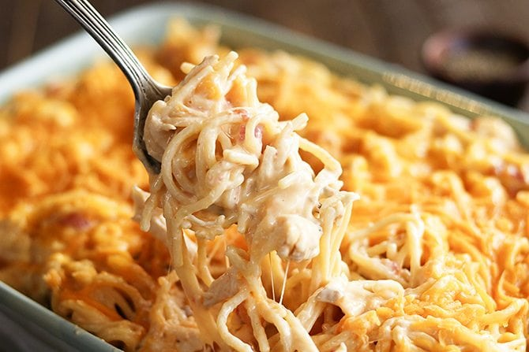

Chicken Spaghetti

A Delicious Creamy Chicken Dinner
Chicken spaghetti is a quick and easy dinner, sure to make those of all ages clean their plates and ask for more!
Ingredients
- 2 pounds frozen boneless skinless chicken breasts
- 1 (16 ounce) package spaghetti
- 1 (10 ounce) can Ro*Tel Tomatoes
- 2 (10.5 ounce) cans cream of mushroom soup
- 1 (16 ounce) package Velveeta cheese
- 4 ounces cream cheese
- 1 teaspoon garlic powder
- 1 teaspoon onion powder
- 1 cup shredded sharp cheddar cheese
Steps
- Place the chicken in a large pot and just cover with water. Cook over medium-low heat until cooked through. Try not to boil the chicken as it can make it tough. Allow to cool enough to handle, then shred using two forks.
- Place the chicken in a large pot and just cover with water. Cook over medium-low heat until cooked through. Try not to boil the chicken as it can make it tough. Allow to cool enough to handle, then shred using two forks.
- Cook the pasta according to the package directions. Drain and set aside.
- In a large pot, combine the Ro*tel with the juice, undiluted cream of mushroom soup, Velveeta cheese, and cream cheese. Heat over low heat, stirring constantly, until the cheeses have melted. Add the garlic powder and onion powder. Add the shredded chicken and cooked spaghetti. Mix well. Pour the mixture into the prepared dish and sprinkle with the shredded cheddar cheese.
- Bake for 20 to 30 minutes or until heated through and the cheese has melted.
Return to Homepage